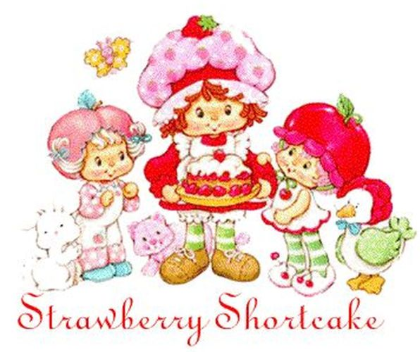
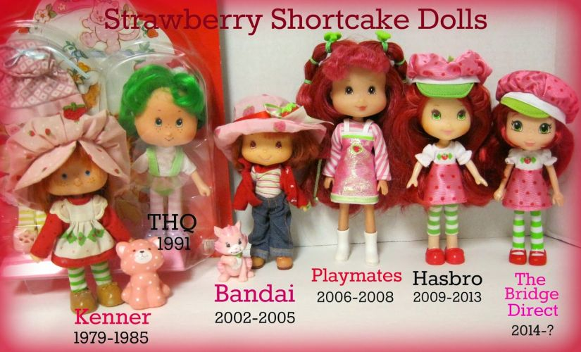

Strawberry Shortcake is a cartoon character originally used in greeting cards, but was later expanded to include dolls, posters, and other products. The Strawberry Shortcake properties also include a toy line of the character's friends and pets. In addition, the franchise has spawned television specials, animated television series, and films. The franchise is currently owned by the Canadian children's television company DHX Media and American brand management company, Iconix Brand Group, which paid $345 Million to the previous owner Iconix in May 2017.

The original design of Strawberry Shortcake and her cat, Custard, was done in 1979 by Muriel Fahrion during her time as a greeting card illustrator at American Greetings' Juvenile & Humorous card department. Fahrion then designed a subsequent 32 characters for Those Characters From Cleveland (American Greetings' toy and licensing design division).

In 1979, toy manufacturer Kenner Products licensed the character and released the first Strawberry Shortcake doll. At the time, Strawberry Shortcake resembled a typical rag doll, complete with freckles, a mop of red yarn curls, and a bonnet with strawberry prints on it. Cindy Mayer Patton and Janet Jones designed the other later characters of the Strawberry Shortcake line. Lynn Edwards was the editor of the line and developed the characters and storyline. The first doll was a rag doll designed by Muriel Fahrion and created by Susan Trentel, Fahrion's sister.
The Strawberry Shortcake line of characters each had their own fruit or dessert-themed name with clothing to match, and they each had a dessert- or fruit-named pet. Like the Strawberry Shortcake doll, all the other characters' dolls had hair scented to match their dessert theme. The characters lived and played in a magical world known as Strawberryland.
During the 1980s, Strawberry Shortcake became a popular for young girls throughout the United States. At the time, there were many related products, such as sticker albums, clothing, a video game by Parker Brothers entitled Strawberry Shortcake Musical Match-Ups for the Atari 2600, and numerous other products. Several TV specials were made featuring the characters, one each year between 1980 and 1985, when the characters' popularity had waned. Kenner produced no new dolls or toys thereafter.